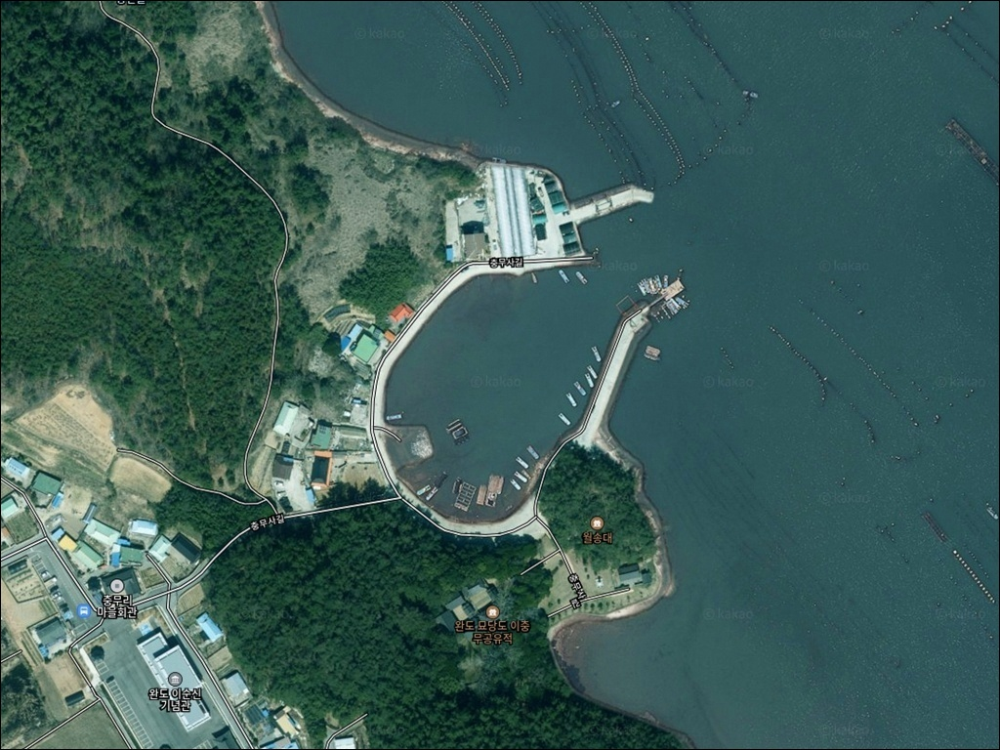
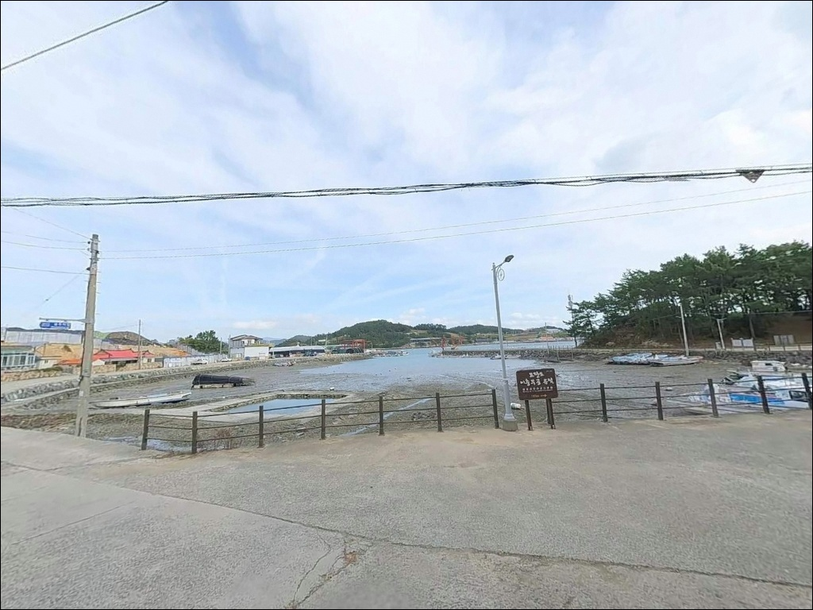
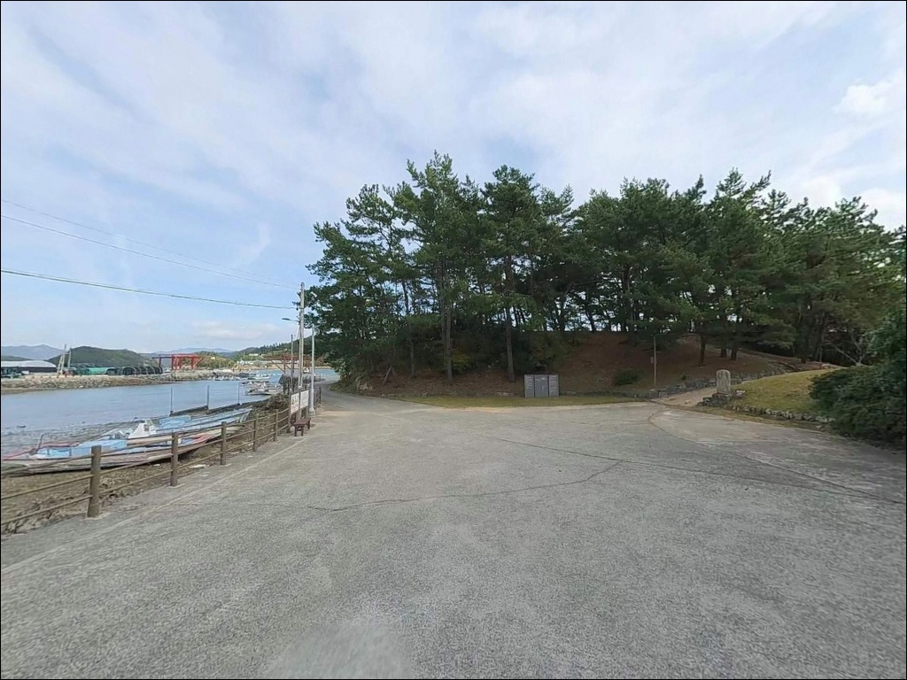
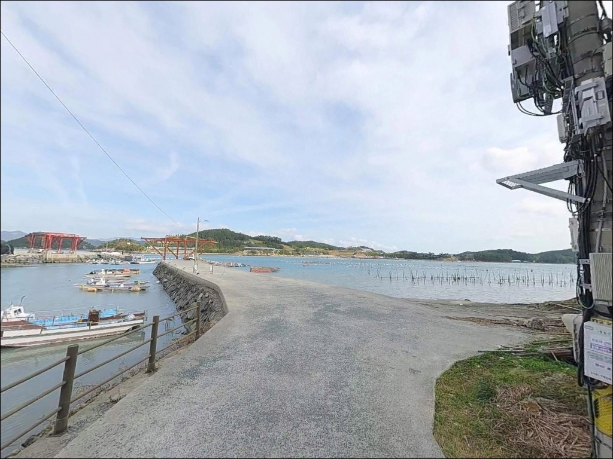
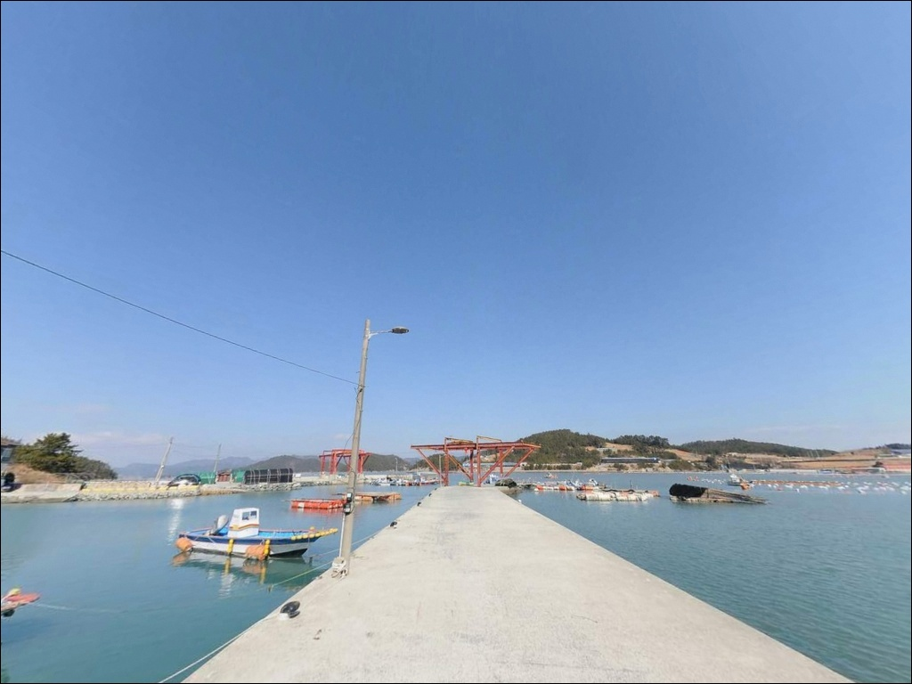
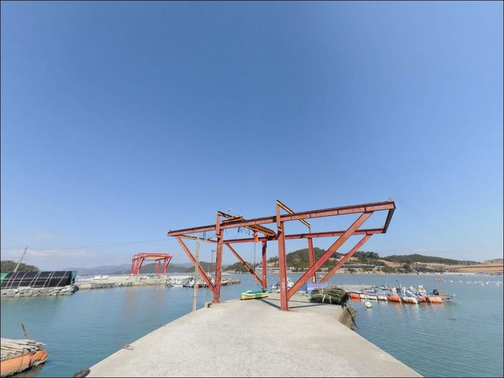
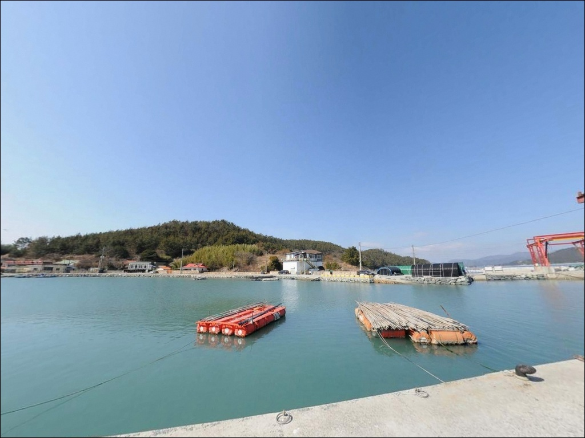
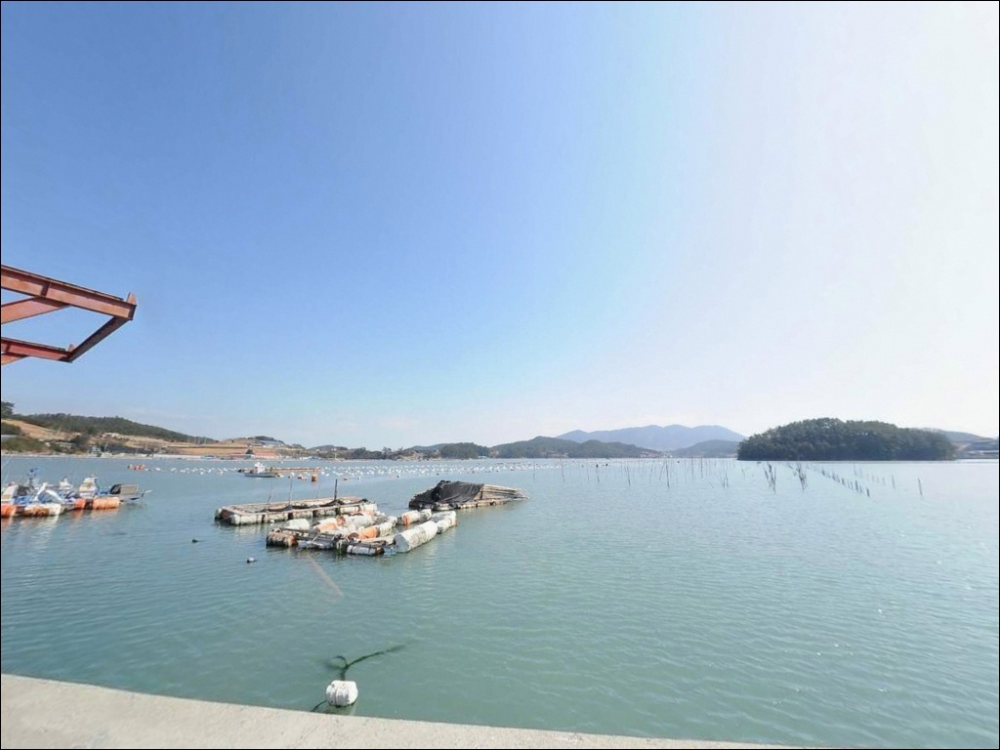
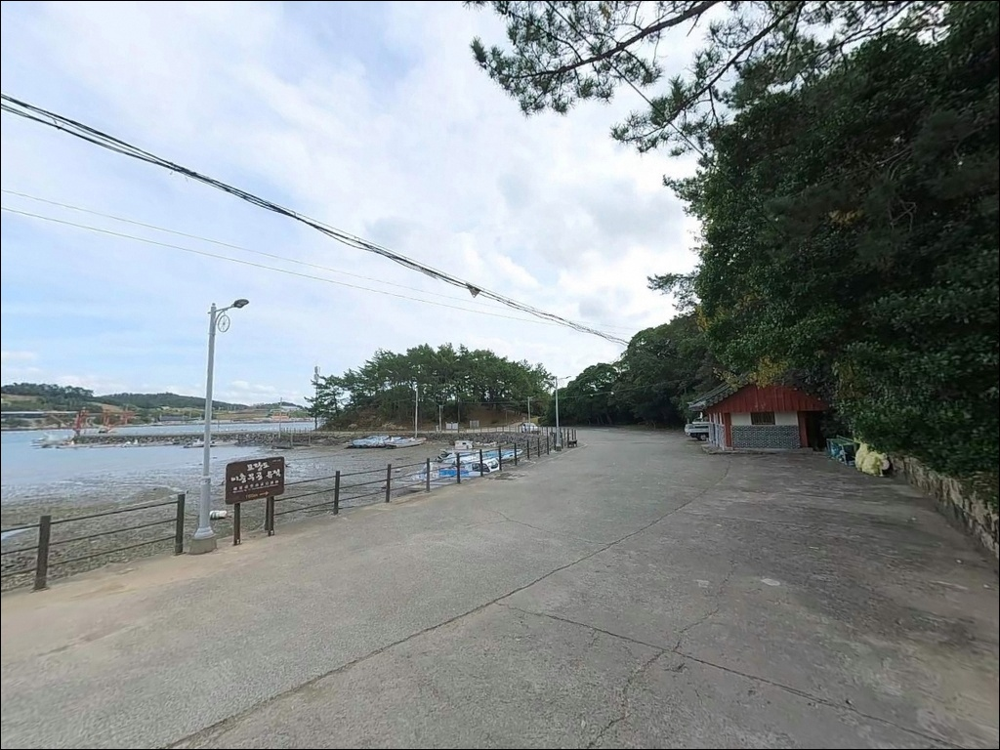

덕동리방파제, 고금도 전남 완도군 해변 옆 솔밭 차박 낚시터 스팟 명소


포인트 안내
덕동리방파제
전남 완도군 고금면 덕동리 723-2
물때를 확인하지 않고 약산수도 인접 방파제에 들어서면
조류가 세지는 사리 전후 구간에서는
어떤 채비를 써도 자리를 잡기가 어렵습니다.
덕동리방파제는 고금도와 조약도(약산도) 사이
해협 조류를 끼고 있는 구조라
물때 계산이 낚시 성패의 출발점입니다.
전남 완도군 고금면 덕동리,
고금도 동쪽 해안에 위치한 덕동리방파제는
약 150m 규모의 방파제와
내항 직벽 구간을 갖춘 어촌정주어항입니다.
외항 테트라포트와 방파제 끝단에서 수심이 깊어지고
조류 흐름이 살아 있어
복수의 낚시 방식을 운용하기에 구조적 여건이 갖춰진 곳입니다.
이 글은 덕동리방파제의
진입 동선, 차박 여건, 물때 판단 기준,
낚시 스타일별 접근 조건에 집중합니다.
조황 단정이나 특정 어종 보장은
이 글의 범위에 포함되지 않습니다.

1. 진입 동선과 차량 접근 여건
덕동리방파제는 고금도 내부 도로망을 이용해
차량으로 직접 접근이 가능한 구조입니다.
덕동마을을 거쳐 항만 입구까지 이어지는 도로는
왕복 2차선이 확보되어 있으며,
대형 캠핑카 기준으로도 진입이 가능한 폭입니다.
방파제 시작 지점 넓은 공터가
가장 선호되는 주차 지점입니다.
선착장 내항 직벽 구간에도 낚시 차량을
바로 붙여 세울 수 있는 여건이며,
항만 내부 공간이 넓어
대형 차량도 회차에 무리가 없습니다.
고금도 진입은 고금대교를 통해
강진 마량 방면에서 연결됩니다.
섬 내부 주축 도로는 포장 상태가 안정적이며,
덕동리까지는 고금면 소재지에서
차량으로 10분 내외 거리입니다.

2. 차박 환경과 야간 체류 여건
방파제 입구 넓은 공터는
낚시 후 그대로 하룻밤 머무는 차박 지점으로
활용할 수 있는 공간입니다.
방파제와 내항 입구를 중심으로
가로등이 설치되어 있어
야간 시야 확보는 가능한 편입니다.
민가와는 적당한 거리가 떨어져 있어
야간 낚시와 차박 시 소음 간섭이 적은 환경입니다.
다만 외항이 약산수도 방향으로 열려 있어
북동풍의 영향을 받을 수 있습니다.
차량 방향은 바람 취약 방향을 고려해
외항 쪽을 등지는 방향으로 세우는 편이
야간 체류에 유리합니다.
전형적인 어촌 마을 어항 구조로
야간 차량 통행은 많지 않습니다.
어선 계류 구역에는 주차하지 않는 것이
기본 매너이며,
어민 작업 시간 전후로는
차량 위치를 미리 조정해 두는 편이 좋습니다.


3. 주변 편의시설 및 인프라 현황
덕동리 인근에는 부두식당이 위치해
생선회와 해산물 식사를 해결할 수 있습니다.
방파제 주변에서 도보 거리로
접근이 가능한 편입니다.
대형 편의점과 마트는
고금면 소재지 농상리 방면까지
차량으로 이동해야 이용이 가능합니다.
완전 자급 체제로 출발하는 편이
현실적인 준비 방식이며,
식수, 얼음, 낚시 소품, 연료는
고금대교를 건너기 전에 마량 방면에서
미리 확보하는 동선이 효율적입니다.
응급 상황 발생 시
고금도에서 강진읍까지의 이동 시간이
상당하므로 비상약품 준비는 기본입니다.
해양 사고 발생 시 해양경찰청 긴급신고 122로
즉시 신고합니다.

4. 방문 전 반드시 챙겨야 할 준비사항
덕동리방파제 출조 전 가장 먼저
확인할 것은 물때입니다.
약산수도 해협 조류의 영향으로
사리 전후에는 유속이 크게 빨라지는 구간이 형성됩니다.
바다타임에서 고금면 기준 물때를 미리 확인하고,
3~6물 구간의 조류 소통 타이밍을
중심으로 출발 시각을 맞추는 것이 기본 전략입니다.
외항 테트라포트는 이끼가 있는 경우
미끄러울 수 있어 갯바위화 신발 착용이 필요합니다.
구명조끼는 테트라포트 진입 시 기본 착용이며,
야간에는 헤드랜턴을 반드시 챙겨야 합니다.
약산수도는 선박 통항이 빈번한 구간이므로
항로 방향으로 낚싯줄이 뻗지 않도록
캐스팅 방향을 주의해야 합니다.
양식장 어구가 방파제 주변 해역에 분포하므로
채비 방향을 잡을 때 사전에
외항 주변 수면 상황을 살피는 것이 좋습니다.
최신 조황은 출조 전 고금면·고금도 관련
낚시 커뮤니티에서 반드시 검색해 두시기 바랍니다.

5. 약산수도를 끼고 형성된 낚시 지형 분석
덕동리방파제의 핵심은
고금도와 조약도 사이에 형성된
약산수도 조류입니다.
해협 구조가 조류를 집중시키는 환경을 만들고,
방파제 끝단과 외항 방향에서
수심이 깊어지는 급변 구간이
포식성 어종이 이동하는 길목 역할을 합니다.
방파제 외항은 테트라포트가 전 구간에 배치된 구조이며,
수심이 깊고 조류가 살아 있어
대물 공략에 적합한 발판입니다.
내항은 석축과 콘크리트 직벽 구조로
발판이 안정적이고,
야간 가로등 주변 볼락 루어와
가족 동반 낚시에 적합한 구간입니다.
바닥은 모래와 펄이 섞인 지질로
방파제 끝단과 외항 방향에서
수심 변화가 뚜렷하게 나타납니다.
조류가 흐르는 타이밍에 채비를 넣는 방식이
이 포인트 구조에 맞으며,
정조 시간에는 바닥층 탐색으로
방식을 전환하는 것이 효율적입니다.
최신 조황은 가기 전에 꼭 검색해 보시기 바랍니다.


6. 덕동리방파제에 어울리는 낚시 스타일
외항 끝단에서 가장 잘 맞는 방식은
찌낚시(릴찌·반유동)입니다.
약산수도 조류가 흐르는 타이밍,
특히 중들물 이후 흐름이 안정되는 구간에서
감성돔과 뱅에돔 입질 빈도가 올라가는 구조입니다.
방파제 끝단에서 외항 쪽으로
채비를 흘려 넣는 방식이 기본 공략입니다.
에깅도 이 포인트 구조에 잘 어울립니다.
갑오징어 시즌에는 외항과 내항
양쪽에서 반응을 기대할 수 있으며,
야간에는 내항 가로등 주변에서
볼락 루어낚시가 활발해지는 구간입니다.
소형 지그헤드 채비를 내항 직벽 경계선 따라
천천히 탐색하는 방식이 어울립니다.
원투낚시는 방파제 끝단과 내항 직벽 구간에서
모두 운용이 가능합니다.
모래와 펄이 섞인 바닥 지형을 노려
도다리, 보리멸, 붕장어를
기대해 볼 수 있는 방식이며,
정조 타이밍에 끝단 외항 방향으로
멀리 던지는 방식이 유효합니다.
농어 루어는 외항 라인을 따라
미노우 계열을 활용해 탐색할 수 있습니다.

7. 대안 포인트와 플랜 B 동선
덕동리방파제 여건이 여의치 않을 때
가장 가까운 대안은
우두리방파제입니다.
약 200m 거리로 동일 해역에 위치하며,
유사한 수심 구조와 조류 조건을 공유하고 있어
당일 플랜 B로 즉시 이동이 가능합니다.
1.8km 거리의 화성방파제와
2km 거리의 세동리방파제도
같은 고금도 내만권 낚시 환경을 공유하는
대체 포인트입니다.
상황에 따라 고금도 동측 해안선을 따라
복수 포인트를 묶어 이동하는 동선이
하루 출조에 효율적입니다.
차박 지점이 여의치 않다면
고금도 해안도로 라인에서
해안선 전망이 열리는 공터들을
대안으로 두는 방식이 좋습니다.
이충무공 유적 인근 주차장은
화장실 등 인프라 여건이 상대적으로
안정적인 차박 후보 지점입니다.

약산수도 조류를 이해한 낚시꾼에게
덕동리방파제는 전천후 포인트입니다
찌낚시, 에깅, 원투낚시, 루어를
고루 즐기는 낚시인이라면
덕동리방파제의 지형 구조는
잘 맞는 여건입니다.
150m 방파제가 외항과 내항을
뚜렷하게 구분해 주고,
약산수도 조류가 물때에 따라
살아 움직이는 구간이기 때문입니다.
반면 물때 확인 없이 사리 전후에 도착하거나,
자급 준비 없이 고금도 깊숙이 들어오면
낚시 여건과 생활 여건 모두
기대와 달라질 수 있습니다.
물때 확인, 진입 전 자급 준비, 기상 점검,
이 세 가지를 갖추고 간다면
고금도 동쪽에서 기억에 남는
출조가 될 수 있는 곳입니다.
방파제 직벽 옆 공터에 차를 세우고
약산수도 조류가 살아나는 타이밍을 기다리며
하룻밤 머무는 낚시 차박 여행자라면,
덕동리방파제는 조용하고 실속 있는
선택지가 됩니다.